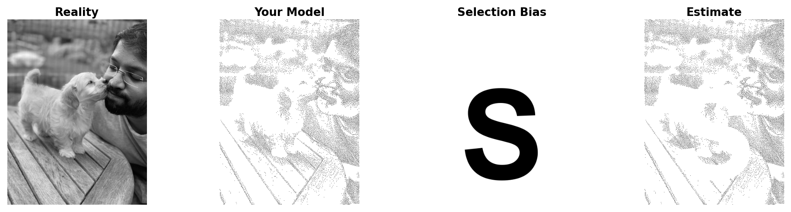

Selection Bias & Missing Data
A Four-Panel Selection Bias Meme

Four-panel selection bias meme using my own image: Reality, Your Model, Selection Bias, and Estimate.
Why this shows selection bias
The meme starts with the true picture (Reality) and turns it into a stippled sample of dots that acts as my model of the data.
The bold S removes any dots that land inside it, creating a clear, non‑random missing‑data pattern instead of random noise.
The final panel (Estimate) is what we would see after this biased missingness, where the S‑shaped gap pushes the picture away from reality in the same way selection bias can twist real statistical results.